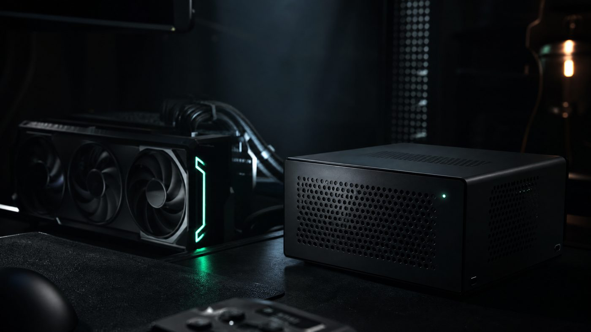

Typed decisions.
Immediately.
Statim runs decision models as a native C++ engine. Ask any text a choice, a score or a yes/no question, and get calibrated answers from one forward pass on your own CPU or GPU.
- 3.3 MB static binary
- No Python at runtime
- Apache-2.0 engine
department choice
Which department should handle this?
- billing0.978
- sales0.016
- technical0.006
Answer billing
urgency score
How urgent is this request?
Probabilities: not urgent 0.24, soon 0.24, critical 0.52.
Score 1.28 of 2
refund yes / no
Does the user explicitly request a refund?
- yes0.915
- no0.085
Answer yes
All three questions in one forward pass: 190 tokens, about 0.3 s on a Ryzen 7 5800X CPU for the 395M-parameter model. Real output, not a mock-up.
Two models, one engine
The engine runs any Laya checkpoint. The Statim Decide models are fine-tuned on licence-audited data and released only after the no-harm gate below. Both are on Hugging Face as f32 and q8_0 files.
-
Statim Decide EN Large
ModernBERT-large, 395M parameters, English. Release 0.5.0.
- typed-decisions
- 0.768
- Banking77
- 0.928
- MASSIVE, English
- 0.867
-
Statim Decide Multilingual Base
mmBERT-base, evaluated in 12 languages. Release 0.4.0.
- typed-decisions
- 0.7585
- Banking77
- 0.903
- MASSIVE, 12 languages
- 0.772
Try both without installing anything in the live demo, or route real support tickets in ten minutes with the ticket triage example.
Accuracy you can check
Every number here comes from a script in the repository. The best Statim Decide model on each benchmark next to published systems under the same protocol, and the 54 held-out suites every release has to pass.
typed-decisions
0.768 Test split, 2,000 decisions. In-domain: its train split is replay data.- Statim Decide EN Large0.768
- meraGPT0.768
- laya-typed-decisions0.766
- Jev0.727
AG News, zero-shot
0.939 Never trained on. First 2,000 test rows, four topics.- Laya0.950
- Statim Decide EN Large0.939
- GPT-3 (CARP)0.926
- Jev0.881
Banking77
0.928 Trained on the train split, all 77 intents in one question.- MPNet, supervised classifier0.941
- Statim Decide EN Large0.928
MASSIVE, 12 languages
0.772 Trained on 2,000 rows per language; the paper's XLM-R used the full train set.- XLM-R base, MASSIVE paper0.857
- Statim Decide Multilingual0.772
Published results from the respective papers and model cards, collected with sources in docs/ROADMAP.md. Statim's numbers: tools/finetune/gate.py.
No release without the no-harm gate
A new model replaces the old one only if validation improves and no held-out suite drops by more than two standard errors. Here is Statim Decide Multilingual against the checkpoint it was trained from, one square per suite, change in accuracy points. The English model passed the same gate: 11 significant gains, 0 regressions.
Trained tasks 14 suites
- Banking77: 0.517 to 0.903+39
- typed-decisions: 0.351 to 0.758+41
- MASSIVE intents ar: 0.200 to 0.660+46
- MASSIVE intents de: 0.327 to 0.767+44
- MASSIVE intents en: 0.467 to 0.813+35
- MASSIVE intents es: 0.347 to 0.773+43
- MASSIVE intents fr: 0.353 to 0.760+41
- MASSIVE intents hi: 0.267 to 0.760+49
- MASSIVE intents it: 0.340 to 0.767+43
- MASSIVE intents ja: 0.420 to 0.780+36
- MASSIVE intents pl: 0.333 to 0.800+47
- MASSIVE intents ru: 0.360 to 0.820+46
- MASSIVE intents tr: 0.313 to 0.760+45
- MASSIVE intents zh-CN: 0.353 to 0.800+45
Never trained on 40 suites
- AG News: 0.938 to 0.931−1
- DAIR Emotion: 0.532 to 0.526−1
- Belebele reading ar: 0.253 to 0.247−1
- Belebele reading de: 0.227 to 0.340+11
- Belebele reading en: 0.307 to 0.347+4
- Belebele reading hi: 0.200 to 0.307+11
- FarsTail NLI fa: 0.687 to 0.633−5
- GoEmotions en: 0.453 to 0.467+1
- HWU64 intents en: 0.500 to 0.820+32
- IndoNLI id: 0.740 to 0.700−4
- HateCheck ar: 0.540 to 0.580+4
- HateCheck de: 0.653 to 0.667+1
- HateCheck en: 0.660 to 0.633−3
- HateCheck es: 0.600 to 0.673+7
- HateCheck fr: 0.607 to 0.667+6
- HateCheck hi: 0.547 to 0.560+1
- HateCheck it: 0.653 to 0.687+3
- HateCheck nl: 0.667 to 0.600−7
- HateCheck pl: 0.627 to 0.640+1
- HateCheck pt: 0.667 to 0.707+4
- HateCheck zh: 0.713 to 0.700−1
- Sentiment ar: 0.500 to 0.553+5
- Sentiment de: 0.487 to 0.560+7
- Sentiment en: 0.620 to 0.640+2
- Sentiment es: 0.420 to 0.547+13
- Sentiment fr: 0.560 to 0.553−1
- Sentiment hi: 0.520 to 0.460−6
- Sentiment id: 0.720 to 0.713−1
- Sentiment it: 0.527 to 0.600+7
- Sentiment ja: 0.613 to 0.673+6
- Sentiment ms: 0.527 to 0.527+0
- Sentiment pt: 0.580 to 0.660+8
- Sentiment zh: 0.640 to 0.633−1
- SemRel similarity ar: 0.213 to 0.240+3
- SemRel similarity en: 0.247 to 0.220−3
- SemRel similarity hi: 0.180 to 0.220+4
- SIB-200 topics ar: 0.753 to 0.707−5
- SIB-200 topics de: 0.767 to 0.727−4
- SIB-200 topics en: 0.767 to 0.747−2
- SIB-200 topics hi: 0.707 to 0.707+0
18 significant gains36 within noise0 regressions
279 training sources were checked at their origin and 116 excluded for non-commercial, ShareAlike, copyleft or unknown terms. Every source and its licence is listed in DATA_LICENSES.md.
Same answers. A different machine.
Statim reimplements the Laya engine in C++20. Its answers match the Python reference on all 240 test sequences within 1e-4, and CI checks that on every change. What changes is everything around the forward pass.
-
Cold start to first answer
15× faster -
Server memory
6× less -
HTTP latency, p95
−74 % -
HTTP throughput
2.5× more
Laya is the Python reference server. Measured on a 2015-class laptop CPU with the multilingual checkpoint in f32, 30 states with 8 questions each; method and raw numbers in the README.
- Runtime
- Python 3.10+, PyTorch, transformersOne 3.3 MB binary and one .gguf file
- Peak memory, one request
- 2,667 MB585 MB in f32, 234 MB in q8_0
- Deploy
- pip or Docker with PyTorchStatic binary, distroless image or systemd unit

On a GPU, still exact
Statim on an RTX 3070 against the same machine's Ryzen 7 5800X, both in f32, with Vulkan or CUDA. The usual f16 shortcut stays off unless you pass --gpu-fast, so every answer stays identical. With --gpu-fast the English model serves 16.4 requests per second on Vulkan; q8_0 weights on CUDA reach 15.7.
- English model, per request12×1,683 ms on CPU, 137 ms on GPU
- Multilingual model, per request10×535 ms on CPU, 54 ms on GPU
- English over HTTP8.9×0.91 req/s on CPU, 8.1 req/s on GPU
- Multilingual over HTTP7.7×2.68 req/s on CPU, 20.5 req/s on GPU
One pass. Every option scored.
Other setups ask a model once per question, or once per option. Statim asks once.
Pack the request
The state and every question become one token sequence, with a [MASK] token for each option.
Run the model once
The encoder and the decision head run a single time, not once per question.
Read typed answers
Choice, score and yes/no answers come back calibrated, with confidence, token usage and routing.
- A model is one file
- The converter stores architecture, calibration and tokenizer in a single GGUF file. No sidecar vocabulary, no Python package.
- CPU first, GPU optional
- AVX2 and ARM NEON out of the box. Vulkan and CUDA backends are opt-in and exact by default.
- Two models, one answer
- Serve the English and the multilingual model together: route each request by language, or let both vote.
- Built for production
- Worker pool, admission control, bearer auth, Prometheus metrics, JSON logs, request IDs and graceful shutdown.
- Drop-in protocol
- Speaks the Jev/Laya
POST /v1/systemoneAPI. Existing clients switch by changing the base URL. - Hardened by default
- Limits on body size, JSON depth, tokens, attention memory and concurrency before any inference runs. Security regressions are tested in CI.
Speaks the Jev/Laya API
POST /v1/systemone returns {model, answers, usage, routing}, and errors keep FastAPI's {"detail": ...} shape. Official Python and TypeScript clients use only the standard library and retry on 503.
- POST/v1/systemone
- One state, any number of questions
- POST/v1/systemone/batch
- Many states, packed into shared forward passes
- GET/v1/models
- Loaded models and the device they run on
- GET/health, /ready
- Liveness and readiness probes
- GET/metrics
- Prometheus metrics
Reference: docs/API.md and the OpenAPI 3.1 spec.
curl
statim serve -m multilingual=models/laya-multilingual-f32.gguf --port 8080
curl -s localhost:8080/v1/systemone -d '{
"state": {"subject": "Duplicate charge on invoice #4411",
"body": "We were billed twice for March. Please refund the second charge."},
"questions": {
"department": {"type": "choice",
"instructions": "Which department should handle this?",
"criteria": {"billing": "invoices, refunds",
"technical": "bugs, outages",
"sales": "pricing, contracts"}},
"urgency": {"type": "score",
"instructions": "How urgent is this request?",
"criteria": ["not urgent", "soon", "critical"]},
"refund": {"type": "noul",
"instructions": "Does the user explicitly request a refund?"}}
}'Python
from statim import Client
client = Client("http://127.0.0.1:8080")
decision = client.decide(
{"subject": "Duplicate charge on invoice #4411",
"body": "We were billed twice for March. Please refund the second charge."},
{"department": {"type": "choice",
"instructions": "Which department should handle this?",
"criteria": {"billing": "invoices, refunds",
"technical": "bugs, outages"}},
"refund": {"type": "noul",
"instructions": "Does the user explicitly request a refund?"}},
)
print(decision.answers["department"].choice) # billing
print(decision.answers["refund"].yes) # TrueTypeScript
import { Client } from "@statim/client";
const client = new Client("http://127.0.0.1:8080");
const decision = await client.decide(
{ subject: "Duplicate charge on invoice #4411",
body: "We were billed twice for March. Please refund the second charge." },
{ department: { type: "choice",
instructions: "Which department should handle this?",
criteria: { billing: "invoices, refunds", technical: "bugs, outages" } },
refund: { type: "noul",
instructions: "Does the user explicitly request a refund?" } },
);
console.log(decision.answers.department.choice); // billingFrom clone to first answer
Build the static binary, fetch and convert the models, then serve both with consensus. The playground opens at http://127.0.0.1:8080/.
git clone --recursive https://github.com/BEKO2210/statim && cd statim
cmake -S . -B build -G Ninja -DCMAKE_BUILD_TYPE=Release
cmake --build build
tools/fetch_models.sh multilingual english
./build/statim serve \
-m english=models/laya-english-f32.gguf \
-m multilingual=models/laya-multilingual-f32.gguf \
--consensus- systemdHardened unit with memory and CPU quotas
- DockerDistroless image for CPU or Vulkan
- Probes/health, /ready and Prometheus /metrics
The engine is free. The weights have a commercial path.
The source is Apache-2.0, including for commercial products. Model weights published by Statim are free for noncommercial use, for small companies and for a 32-day trial, and licensed per organisation beyond that.
Source code
Free for any useApache License 2.0Engine, server and tools, in products, internal tools and SaaS.
Weights, noncommercial
FreePolyForm Noncommercial 1.0.0Research, study, hobby projects, education, charities and public institutions.
Weights, small companies and trials
Free, including commercial usePolyForm Small Business 1.0.0, Free Trial 1.0.0Companies below 100 people and 1 M USD revenue use them in production for free; any company may evaluate them for 32 days.
Weights, commercial
Per organisationStatim commercial licenceLarger companies in products, SaaS, paid APIs, internal tools and client work, with volume tiers for self-hosting.
See licensing